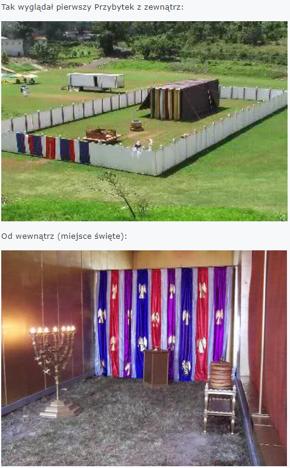

Cienie Starego Testamentu - Świątynia
Przyjrzyjmy się kolejnemu „symbolowi”, który był cieniem nadchodzącej rzeczywistości, zapowiedzią przyszłych rzeczy.
„Albowiem zakon, zawierając w sobie tylko cień przyszłych dóbr, a nie sam obraz rzeczy” (Hebrajczyków 10:1, por. 9:1-9, 7:11, 8:5, Dzieje 3:22, por. Mateusza 26:56, 2 Koryntian 1:20, Rzymian 3:22).
Świątynia Boża.
Przepisy Zakonu Bożego, które zawierały różne postanowienia i przepisy dotyczące świątyni, jej ofiar i służby, miały tylko czasowe, symboliczne znaczenie (Hebrajczyków 10:1).
Świątynia, jej ofiary i służba, zapowiadały osobę i dzieło Chrystusa, który miał umrzeć za grzechy świata (Hebrajczyków 10:1-18, por. Galacjan 3:19-25).
Kapłaństwo porządku lewickiego było niedoskonałe i niewystarczające dla zbawienia człowieka (Hebrajczyków 7:11).
W Słowie Bożym znajdujemy dokładny opis każdego szczegółu starotestamentowej świątyni (namiotu, przybytku, mieszkania), uczynionej według WZORU.
„Potem wzniesiesz przybytek według wzoru, który ci pokazano na górze” (2 Mojżesza 26:30, Dzieje 7:44, por. 2 Mojżesza 25:9,40).
Jednakże starotestamentowa świątynia była „tylko obrazem i cieniem niebieskiej” (Hebrajczyków 8:5).
Starostestamentowa świątynia miała „znaczenie obrazowe, odnoszące się do teraźniejszego czasu…” (Hebrajczyków 9:2,9).
Do obecnego czasu - zainicjowanego już blisko 2000 lat temu, kiedy to została rozpoczeta budowa nowotestamentowej Świątyni zbudowanej przez samego Pana Jehoszua:
„Mamy takiego arcykapłana, który usiadł po prawicy tronu Majestatu w niebie, (2) jako sługa świątyni i prawdziwego przybytku, który zbudował Pan, a nie człowiek.” (Hebrajczyków 8:1-2, por. Zachariasza 6:12-13).
Czy znajdujemy w Biblii opis, kiedy, z czego i jak wybudował Pan świątynię nowotestamentową?
Jeśli Bóg poświęcił tak wiele uwagi budowie, wyposażeniu i funkcjonowaniu ziemskiej świątyni, która była zaledwie cieniem rzeczywistości, to czyż można mniemać, że Biblia milczy na tak ważny temat, jak budowa, wygląd i znaczenie świątyni nowotestamentowej?
Bóg wiele na ten temat objawił.
A zatem przyjrzyjmy się w Piśmie opisowi RZECZYWISTEJ – „NIEBIESKIEJ” ŚWIĄTYNI, której „ziemska” była tylko cieniem.
DUCHOWA ŚWIĄTYNIA BOŻA.
W Nowym Testamencie istnieje Świątynia, szczególny „budynek”, gdzie należy wysławiać Boga, pamiętając o słowach Jehoszua, iż „prawdziwi czciciele będą oddawali Ojcu cześć w duchu i w prawdzie; bo i Ojciec takich szuka, którzy by mu tak cześć oddawali.” (Jana 4:21).
Gdyż nadeszła godzina, „kiedy ani na tej górze, ani w Jerozolimie nie będziecie oddawali czci Ojcu. (24) Bóg jest duchem, a ci, którzy mu cześć oddają, winni mu ją oddawać w duchu i w prawdzie.” (Jana 4:23-24).
Od czasu zawarcia Nowego Przymierza w krwi Chrystusa prawdziwą DUCHOWA ŚWIĄTYNIĘ BOŻA tworzą:
1. Bóg:
„Lecz świątyni w nim nie widziałem; albowiem Pan, Bóg, Wszechmogący jest jego świątynią, oraz Baranek.” (Objawienie 21:22, por. Ezechiela 11:16).
2. Syn Boży:
„Jezus, odpowiadając, rzekł im: Zburzcie tę świątynię, a Ja w trzy dni ją odbuduję. (21) Ale On mówił o świątyni ciała swego.” (Jana 2:19-21, por. Objawienie 21:22, Hebrajczyków 9:11).
3. Lud Boży:
„Albo czy nie wiecie, że ciało wasze jest świątynią Ducha Świętego, który jest w was i którego macie od Boga, i że nie należycie też do siebie samych?” (1 Koryntian 6:19, 3:16).
„Myśmy, bowiem świątynią Boga żywego, jak powiedział Bóg: Zamieszkam w nich i będę się przechadzał pośród nich I będę Bogiem ich, a oni będą ludem moim.” (2 Koryntian 6:16).
Nowotestamentowa Świątynia nazywana jest świątynią Niebieską, co czasami wprowadza ludzi w błędne mniemanie, że chodzi o jakąś rzeczywistość znajdującą się w Niebie. Tak jednak nie jest, gdyż Świątynia, którą zbudował Jehoszua Chrystus, znajduje się na ziemi. Jest to jednak prawdziwie „Niebieska Świątynia”, gdyż:
1. Chrystus mówiąc o ziemskiej rzeczywistości Zboru Bożego, nazywa go „Królestwem Niebieskim” (Mateusza 13:24,31,33,44-45,47,52).
2. Pan Jehoszua powiedział do uczniów, a potem w modlitwie do Ojca Niebieskiego, iż wszystkie dzieci Boże nie należą do tej ziemi - nie są z tego świata - lecz są obywatelami swojej ojczyzny - Nieba (Jana 15:19, 17:14).
Apostoł Paweł także potwierdzał, iż naszą Ojczyzną jest Niebo (Filipian 3:20), a już teraz jakoby zasiadamy wraz z Chrystusem „po Prawicy Bożej” w Niebie (Efezjan 2:6).
3. List do Hebrajczyków (12:22-24) wykazuje, że prawdziwy chrześcijanin ma bardzo bliski związek z Niebem i ubogacającą, radosną z nim społeczność (1 Jana 1:3).
Gdy do powyższych informacji biblijnych dodamy tę jeszcze, że tworzą ją Istoty Niebieskie - Bóg, Syn Boży i lud Boży, posiadający niebieskie obywatelstwo (Jana 15:19, 17:14, Filipian 3:20, Efezjan 1:17-18, 2:5-6, Jana 18:36, Kolosan 1:12-13), to zanika wszelka wątpliwość, że Duchowa Świątynia Nowego Przymierza ma podstawę i prawo nazywać się Niebieską.
Oczyszczenie Świątyni.
Kiedyś, w Starym Testamencie, wejście arcykapłana raz w roku do świątyni z krwią ofiary, dokonywało oczyszczenia tej świątyni (3 Mojżesza 16:11-19).
Jehoszua „wszedł do świątyni” - swego ludu - z darem oczyszczającej krwi (z „pokropieniem” krwi - Hebrajczyków 12:22-24), oczyszczając tę Świątynię (lud Boży) z wszystkich grzechów (1 Jana 1:7, por. Hebrajczyków 1:3), zawarł Nowe Przymierze przypieczętowane własną krwią.
„Potem nagle przyjdzie do swej świątyni Pan (Adon), którego oczekujecie, to jest anioł przymierza, którego pragniecie. Zaiste, on przyjdzie - mówi Pan (JHWH) Zastępów” (Malachiasza 3:1).
Chrystus umożliwił nam wstęp na Nową Drogę prowadzącą do samego najświętszego centrum Świątyni Bożej – tak iż mamy przystęp w duchu i prawdzie do Boga i Jego Syna, jako dzieci Boże, nowotestamentowy lud Boży - żywe kamienie, budujące się na „mieszkanie Boże w Duchu” (Efezjan 2:20-22).
Taką właśnie żywą, Duchową Świątynię zbudował Chrystus (Hebrajczyków 8:2).
Wszyscy mamy być jedno - świątynia Boża składa się z Boga, Syna, i nas (Jana 17:21-23).
Nie jest to materialny budynek w Niebie czy na Ziemi, lecz wspaniała duchowa rzeczywistość ludu Bożego, trwającego w łączności ze swym Bogiem i Zbawicielem (Jana 14:23, 1 Jana 1:3, Efezjan 2:19-22).
Nie miałoby natomiast sensu ani znaczenia, aby nasz Pan służył jakiemuś materialnemu budynkowi - w Niebie czy na Ziemi. Natomiast głęboki sens i znaczenie ma Jego służba dla wierzących.
Każdego, kogo Ojciec „zna” – dzisiaj ociosuje na rozmaite sposoby – czasami bolesne (Hebrajczyków 12:11), ale często nie ma innej drogi, aby ludzie w końcu patrząc zaczęli widzieć, a słuchając zaczęli słyszeć, aby finalnie stać się jednym z żywych kamieni Duchowej Świątyni Bożej. Oczyszczonym, ociosanym z wszelkich brudów i kłamstw, nauk tego świata.
„Świątynię zaś budowano z kamieni gotowych, przyciosanych już w kamieniołomach.” (1 Królewska 6:7).
Kiedy „kamień” zostanie „ociosany” – przyjmuje w pełni ŚWIADECTWO Ojca o Synu (1 Jana 3:23, 5:3,5,10) oraz Syna o Ojcu (Marka 12:29-30) - staje się POSŁUSZNYM wyłącznie SŁOWU – wierzy w dzieło odkupienia „Syna Człowieczego” i jest posłusznym nauce i przykazaniom Boga, przekazanym przez Jego Syna i apostołów. Jest wówczas żywym kamieniem (dzieckiem Boga, Świątynią ducha Bożego) i wspólnie z ludem Bożym buduje się na „mieszkanie Boże w Duchu” (Efezjan 2:20-22).
Warunek, to uwierzyć w świadectwo i być posłusznym…
Wiara rodzi poznanie, a poznanie rodzi miłość, a miłość jest wytrwała i rodzi posłuszeństwo.
STAROTESTAMENTOWA ŚWIĄTYNIA – szczegóły.
Plan i model świątyni przedstawił Bóg Mojżeszowi, udzielając mu dokładnych wskazówek jak ma je wykonać (2 Mojżesza 25:9,40, 26:30, Dzieje 7:44; Hebrajczyków 8:5).
Świątynia składała się z dwóch przedziałów: świętego i najświętszego, otoczona była dziedzińcem w formie wielkiego prostokąta. Wyposażona była w następujące sprzęty.
W miejscu najświętszym:
- skrzynię przymierza z dwoma cherubinami ponad wiekiem skrzyni.
W miejscu świętym:
- ołtarz kadzenia,
- świecznik
- stół z chlebami pokładnymi.
Na dziedzińcu przed wejściem do świątyni:
- umywalnia,
- ołtarz całopalenia.
(Hebrajczyków 9:1-5, 2 Mojżesza 25-27).

„Wprawdzie i pierwsze przymierze miało przepisy o służbie Bożej i ziemską świątynię. (9) ma to znaczenie obrazowe, odnoszące się do teraźniejszego czasu…” (Hebrajczyków 9:1-9).
Skoro już wiemy, że Prawdziwą Duchową Świątynię Bożą tworzy nasz Bóg (Ezechiela 11:16, Objawienie 21:22), Pan Jehoszua Chrystus (Jana 2:21, Hebrajczyków 9:11, Objawienie 21:22) oraz lud Boży (1 Koryntian 3:16-17, 6:19-20, 2 Koryntian 6:16-18, Efezjan 2:19-22), spójrzmy na jej „cień” – zapowiedź.
Każdy szczegół starotestamentowej świątyni ma duchowe znaczenie.
„Chwałą Bożą jest rzecz ukryć, a chwałą królów rzecz zbadać” (Przysłów 25:24).
Nie jestem w stanie opisać wszystkich duchowych odniesień literalnej świątyni – bowiem ich bogactwo jest niezgłębione, a ramy tego opracowania również na to nie pozwalają.
Oto tylko niektóre z nich.
1 Symbol.
Jedno miejsce spotkań z Bogiem.
Na początek zwróćmy uwagę, że w Starym Przymierzu wszelkie ofiary, dary i wszelka służba i uwielbienie Boga od czasu wybrania „Jeruzalemu”, jako miejsca przebywania chwały Bożej - mogły być sprawowane wyłącznie w tym jednym miejscu – w świątyni Jeruzalemskiej.
Wszystkie próby budowania innych ołtarzy, miejsc kultu i oddawania czci Bogu, spotykały się ze srogą karą, nawet śmiercią.
„Na miejsce, które Pan, Bóg wasz, wybierze na mieszkanie dla swego imienia... (13) Strzeż się, abyś nie składał ofiar całopalnych na każdym miejscu, które zobaczysz. (14) Ale swoje ofiary całopalne będziesz składał tylko na miejscu, które Pan wybierze w jednym z twoich plemion, i tam będziesz czynił wszystko, co Ja ci nakazuję.” (5 Mojżesza 12:12-14).
To jedyne miejsce wielbienia Boga w Jeruzalemskiej świątyni było doskonałą wskazówką i zapowiedzią, że Bogu można będzie służyć tylko i wyłącznie poprzez Jego Syna – Jehoszua.
„Jezus, odpowiadając, rzekł im: Zburzcie tę świątynię, a Ja w trzy dni ją odbuduję (21) Ale On mówił o świątyni ciała swego.” (Jana 2:19,21).
Wskazówka zapowiadająca, że istnieje wyłącznie jedyna Droga do Ojca, a wszystkie inne próby spotkają się z karą, jako wyraz nieposłuszeństwa i buntu przeciw Bogu.
„Ja jestem droga i prawda, i żywot, nikt nie przychodzi do Ojca, tylko przeze mnie.” (Jana 14:6, por. Dzieje 4:12).
„Wszystko, co mi daje Ojciec, przyjdzie do mnie, a tego, który do mnie przychodzi, nie wyrzucę precz” (Jana 6:37-38, por. 1 Tymoteusza 2:5).
„Kto ma Syna, ma żywot; kto nie ma Syna Bożego, nie ma żywota.” (1 Jana 5:19).
Taka jest wola Ojca – mamy słuchać Syna we WSZYSTKIM.
Podstawowa sprawa, to właściwy fundament wiary, a ten jest jeden (1 Koryntian 3:11).
Kolejne symbole, które teraz wymienię - powinny uświadomić nam, jak starotestamentowa świątynia wyobrażała, zapowiadała przyszłą świątynię – czyli dzieci Boże trwające w społeczności z Ojcem i Synem!
„Czy nie wiecie, że świątynią Bożą jesteście i że Duch Boży mieszka w was?” (1 Koryntian 3:16).
2 Symbol.
Czystość świątyni.
Zwróćmy uwagę, jak za czasów istnienia starotestamentowej świątyni należało dokładać wszelkich starań by to miejsce, gdzie Bóg zechciał złożyć na ziemi swoją chwałę, było godne Jego obecności (3 Mojżesza 19:30). Był to przybytek należący do Niego – Władcy wszechświata. Odzwierciedlał to wygląd tej budowli oraz utrzymywanie w nim Bożego porządku, według Jego zarządzeń.
My również konsekwentnie mamy dążyć do posłuszeństwa (2 Koryntian 10:4-6) i uświęcenia, jako, że stanowimy świątynię Najwyższego Boga i Jego Syna.
„Bądźcie wy tedy doskonali, jak Ojciec wasz niebieski doskonały jest” (Mateusza 5:48, por. 2 Koryntian 7:1).
3 Symbol.
Miejsce Najświętsze.
W literalnej świątyni, Najświętsze Miejsce było zastrzeżone tylko do Arcykapłana (jest nim Jehoszua), który jako jeden, jedyny poza Bogiem powinien mieć wstęp do Twojego serca (Ezechiela 11:16, Objawienie 21:22).
Dlatego teraz pełni ufności, „iż przez krew Jezusa mamy wstęp do świątyni („hagion” – miejsce najświętsze) (20) drogą nową i żywą, którą otworzył dla nas poprzez zasłonę, to jest przez ciało swoje” (Hebrajczyków 10:19-20) - mając społeczność z Bogiem Ojcem i Jego Synem, naszym Panem (1 Jana 1:3), uchwyćmy się mocno cudownej nadziei i kroczmy tą jedyną Drogą (Jana 14:6).
Miejsce najświętsze - „hagion”, zostało użyte również w liście do Hebrajczyków 9:3, 9:8.
4 Symbol.
Świadectwo w Skrzyni (arce) Przymierza ulokowanej w Miejscu Najświętszym.
W Skrzyni Przymierza znajdowało się świadectwo zawarcia Starego Przymierza, jako „niezbity” dowód – świadectwo:
„A gdy dokończył rozmowy z Mojżeszem na górze Synaj, dał mu dwie tablice Świadectwa” (2 Mojżesza 31:18).
„A wziąwszy Świadectwo włożył je do Skrzyni.” (2 Mojżesza 40:20).
„Zasłonę zawiesisz na hakach i wniesiesz za zasłonę Skrzynię Świadectwa, a ta zasłona będzie wam oddzielać miejsce święte od najświętszego.” (2 Mojżesza 26:33).
W kontekście słów:
„Zabezpieczę świadectwo, zapieczętuję naukę w moich uczniach.” (Izajasza 8:16).
Oraz:
„Złożę mój zakon w ich wnętrzu i wypiszę go na ich sercu” (Jeremiasza 31:33).
...Świadectwo znajdujące się niegdyś w Skrzyni Przymierza nabiera szczególnego wymiaru.
Bóg składa w sercu człowieka ŚWIADECTWO o SYNU (Marka 9:7, Mateusza 3:17), jako podstawowe i największe przykazanie Ojca:
„Jeżeli świadectwo ludzkie przyjmujemy, to tym bardziej świadectwo Boże, które jest wiarogodniejsze; a to jest świadectwo Boga, że złożył świadectwo o swoim Synu. (10) Kto wierzy w Syna Bożego, ma świadectwo w sobie. Kto nie wierzy w Boga, uczynił go kłamcą, gdyż nie uwierzył świadectwu, które Bóg złożył o Synu swoim. (11) A takie jest to świadectwo. że żywot wieczny dał nam Bóg, a żywot ten jest w Synu jego. (12) Kto ma Syna, ma żywot; kto nie ma Syna Bożego, nie ma żywota.” (1 Jana 5:12-13).
Każde Boże dziecko (świątynia Boża) zgodnie wyznaje, że Jehoszua nie jest żadnym trójjedynym bożkiem, aniołem Michałem, czy jednym z proroków, lecz zgodnie ze świadectwem Boga świadczy, że „kto tedy wyzna, iż Jezus jest Synem Bożym, w tym mieszka Bóg, a on w Bogu” (1 Jana 4:15).
Dzięki temu świadectwu odnosimy zwycięstwo:
„Bo wszystko, co się narodziło z Boga, zwycięża świat, a zwycięstwo, które zwyciężyło świat, to wiara nasza. (5) A któż może zwyciężyć świat, jeżeli nie ten, który wierzy, że Jezus jest Synem Bożym?” (1 Jana 5:4-5, 13).
To właśnie to świadectwo (Izajasza 8:16) Bóg włożył w serca dzieci Bożych.
„Tym zaś, którzy go przyjęli, dał prawo stać się dziećmi Bożymi, tym, którzy wierzą w imię jego” (Jana 1:12).
Dzieci Boże noszą w sercach zakon (Jeremiasza 31:33), przykazania CHRYSTUSA (nie Mojżesza), które dał nam w Imieniu Boga Ojca.
„I stałem się dla Żydów jako Żyd, aby Żydów pozyskać; dla tych, którzy są pod zakonem, jakobym był pod zakonem, chociaż sam pod zakonem („Mojżeszowym”) nie jestem, aby tych, którzy są pod zakonem, pozyskać. (21) Dla tych, którzy są bez zakonu, jakobym był bez zakonu, chociaż nie jestem bez zakonu Bożego, lecz pod zakonem Chrystusowym, aby pozyskać tych, którzy są bez zakonu.” (1 Koryntian 9:21).
5 Symbol.
Cheruby w Miejscu Najświętszym.
„Zrobisz też dwa cheruby z litego złota, zrobisz je na obu krawędziach wieka. (20) Cheruby będą miały skrzydła rozpostarte do góry. Będą one okrywać swoimi skrzydłami wieko, a twarze ich zwrócone będą ku sobie. Twarze cherubów zwrócone będą ku wieku. (21) Na wierzchu skrzyni położysz wieko, w skrzyni zaś złożysz Świadectwo, które ci dam” (2 Mojżesza 25:18-21).
Cheruby wyobrażały aniołów Bożych, których rzeźby postawione nad ŚWIADECTWEM mieszczącym się w Skrzyni Przymierza, symbolizowały działalność faktycznych posłańców Bożych – aniołów, pełniących służbę Bożą, gdyż „są oni wszyscy służebnymi duchami, posyłanymi do pełnienia służby gwoli tych, którzy mają dostąpić zbawienia?” (Hebrajczyków 1:14).
Służbę na rzecz dzieci Bożych, uczestników Nowego Przymierza – tych, którzy mają ŚWIADECTWO w sobie (podobnie, jak świadectwo znajdowało się wewnątrz starotestamentowej arki).
„A oni zwyciężyli go przez krew Baranka i przez słowo świadectwa swojego” (Objawienie 12:11).
Dlatego do posłańców anielskich powiedziano między innymi:
„Nie wyrządźcie szkody ani ziemi, ani morzu, ani drzewom, dopóki nie opatrzymy pieczęcią sług Boga naszego na czołach ich.” (Objawienie 7:3).
Pieczęcią Bożą, jest oczywiście Jego duch (Efezjan 1:13, 4:30), niczym wieko nad starotestamentową Skrzynią Przymierza.
Podobnie, jak cherubowie nad wiekiem Skrzyni Świadectwa, tak dziś:
„Anioł Pański zakłada obóz Wokół tych, którzy się go boją, i ratuje ich.” (Psalm 34:8).
Podobnie, jak cherubowie nad wiekiem Skrzyni Świadectwa mieli skrzydła rozpostarte ku niebu, a twarze zwrócone na świadectwo, tak dziś:
„Baczcie, abyście nie gardzili żadnym z tych małych, bo powiadam wam, że aniołowie ich w niebie ustawicznie patrzą na oblicze Ojca mojego, który jest w niebie.” (Mateusza 18:10).
6 Symbol.
Chleby Bożej obecności w Miejscu Świętym.
Bożą liczbą jest dwanaście. Każdego tygodnia w Szabat, kapłan żydowski kładł w miejscu świętym dwanaście chlebów pokładnych. Miały być w dwóch stosach po sześć: 6+6 = 12 (3 Mojżesza 24:5-6, 8). Układane je na szczerozłotym stole, symbolizującym „tron”.Nazywano je chlebami Bożej obecności. „Ułożysz je w dwóch rzędach, po sześć w rzędzie, na szczerozłotym stole przed Panem” (3 Mojżesza 24:6) „i zrobisz na nim dokoła złoty wieniec.” (2 Mojżesza 25:23-24).
Miały wskazywać na obecność (Jana 14:23) oraz naukę (Jana 14:24, 6:35-38) Ojca i Syna:
„Kto stworzył wszystkie krańce ziemi? Jakie jest jego imię? Jakie jest imię jego syna? Czy wiesz?” (Przysłów 30:4).
„Na początku było Słowo, a Słowo było u Boga, a Bogiem było Słowo.” (Jana 1:1-2).
Ojca i Syna, którzy siedzą na „tronie”:
„I pokazał mi rzekę wody żywota, czystą jak kryształ, wypływającą z tronu Boga i Baranka.” (Objawienie 22:1, por. Hebrajczyków 1:8).
„Niechaj się nie trwoży serce wasze; wierzcie w Boga i we mnie wierzcie!” (Jana 14:1, por. 17:3, 1 Koryntian 8:6).
Widzimy tutaj niezwykle jasny NAKAZ – mamy wierzyć wyłącznie w Boga i Jego Syna, a nie w osobowego ducha Bożego. Osoby, które wierzą dodatkowo w osobę ducha Świętego są BAŁWOCHWALCAMI, a „bałwochwalcy… Królestwa Bożego nie odziedziczą” (1 Koryntian 6:9-10).
To było wystudiowanym planem szatana - wkroczenie do rady Dwóch i zajęcie miejsca należnego Ojcu i Synowi (Izajasza 14:12-14). Udało mu się to z każdym, kto wierzy w trójjedynego boga (666).
Chleby wyobrażały także nasze „karmienie” się Słowem Boga, przekazanym nam przez Jego Syna (Jana 6:35-51).
7 Symbol.
Siedmioramienny świecznik.
Był to symbol ducha Bożego, którego cząstkę już dzisiaj otrzymują wszystkie dzieci Boga - słudzy Jego Syna, który posiada pełnię tegoż ducha.
„To mówi Ten, który ma siedem duchów Bożych i siedem gwiazd” (Objawienie 3:1, por. 4:5, 5:6).
„Siedmioro oczu Baranka” to także „siedem duchów Bożych zesłanych na całą ziemię” (co rozpoczęło się w Dniu Pięćdziesiątnicy), gdyż z woli Ojca, w Synu, zamieszkała cała pełnia boskości (Kolosan 4:19).
Siedem wyraża pełnię, a prorok Izajasz wskazuje nam, o jakie siedem przymiotów ducha, czyli inaczej „duchów” chodzi”:
„I spocznie na nim Duch Pana; Duch mądrości i rozumu, Duch rady i mocy, Duch poznania i bojaźni Pana.” (Izajasza 11:2).
Siedem lamp starotestamentowego świecznika miało nieustannie świecić od wieczora do rana (2 Mojżesza 27:20:21), co symbolizowało nasze namaszczenie i chodzenie w światłości, zgodnie z poleceniem Bożym - „bądźcie pełni Ducha” (Efezjan 5:18).
„Abyście się stali nienagannymi i szczerymi dziećmi Bożymi bez skazy pośród rodu złego i przewrotnego, w którym świecicie jak światła na świecie, (16) zachowując słowa żywota” (Filipian 2:15-16).
Stało się to możliwe dzięki naszemu Panu (Objawienie 5:6) – Synowi Bożemu.
„W nim było życie, a życie było światłością ludzi. (5) A światłość świeci w ciemności, lecz ciemność jej nie przemogła.” (Jana 1:4-5, por. 8:12, 12:35-36,46).
„Byliście bowiem niegdyś ciemnością, a teraz jesteście światłością w Panu. Postępujcie jako dzieci światłości, (9) bo owocem światłości jest wszelka dobroć i sprawiedliwość, i prawda.” (Efezjan 5:8-9, por. 2 Koryntian 6:14-16).
Mocą ducha Bożego, jako świątynia Boża - utrzymujemy społeczność z Ojcem i Synem, korzystając z różnych darów duchowych (1 Koryntian 3:16, 12:4-7).
8 Symbol.
Ołtarz kadzidlany w Miejscu Świętym.
Dwa razy dziennie: rano i wieczorem, na specjalnym ołtarzu umieszczonym naprzeciw zasłony Miejsca Najświętszego, w czasie przygotowania lamp, miało być spalane wonne kadzidło (2 Mojżesza 30:1, 6-8).
Jehoszua Chrystus był Tym, który najpierw „siebie samego wydał za nas, jako dar i ofiarę Bogu ku miłej wonności.” (Efezjan 5:2).
Następnie na przykład w księdze Objawienia 5:8 widzimy modlitwy przedstawiono jako „złotą czaszę pełną wonności”. Modlitwy, niczym kadzidło wznoszą się przed tron Boży.
„I wzniósł się z ręki anioła dym z kadzideł z modlitwami świętych przed Boga” (Objawienie 8:3-4).
„Niech wznosi się ku tobie modlitwa moja jak kadzidło, A podniesienie rąk moich jak ofiara wieczorna!” (Psalm 141:2, por. Psalm 50:14).
Nasze modlitwy są niczym poranne i wieczorne spalanie wonnego kadzidła przed Bożym majestatem.
Ołtarz kadzidlany symbolizował nasze modlitwy.
Odtąd, jako odkupione dzieci Boże w Imieniu Syna Bożego wznosimy swe ręce i wołamy do Boga.
„Wszystko, cokolwiek czynicie w słowie lub w uczynku, wszystko czyńcie w imieniu Pana Jezusa, dziękując przez Niego Bogu Ojcu.” (Kolosan 3:17).
Czy Ty również drogi czytelniku jesteś „kapłanem Boga i Chrystusa”, składającym duchowe „ofiary”? (2 Piotra 2:5).
„Przez niego więc nieustannie składajmy Bogu ofiarę pochwalną, to jest owoc warg, które wyznają jego imię (Jehoszua jest Panem, Synem Bożym) (16) A nie zapominajcie dobroczynności i pomocy wzajemnej; takie bowiem ofiary podobają się Bogu.” (Hebrajczyków 13:16).
Apostoł Paweł uważa wiarę i poświęcenie dziecka Bożego za „ofiarę i dar” (Filipian 2:17), także pomoc materialną, jakiej udzielili mu Filipianie, nazywa „przyjemną wonnością, ofiarą mile widzianą, w której Bóg ma upodobanie” (Filipian 4:18).
Całe życie chrześcijańskie jest ważną posługą kapłańską (Rzymian 12:1).
9 Symbol.
Białe szaty lewitów i służba kapłańska.
Pełnienie królewskiej (należącej do Boga) służby świątynnej było przywilejem zastrzeżonym wyłącznie dla Lewitów. Spośród nich natomiast, tylko potomkowie Aarona mogli pełnić urząd kapłański (4 Mojżesza 18:1-7), co obrazuje w sensie duchowym, iż nikt nie może przyjść do Ojca, jeżeli nie został powołany.
„Nikt nie może przyjść do mnie, jeżeli go nie pociągnie Ojciec, który mnie posłał, a Ja go wskrzeszę w dniu ostatecznym.” (Jana 6:44).
Jesteśmy sługami i kapłanami Boga i Jego Syna (2 Piotra 2:5), a dodatkowym opisem symbolu „białych szat” niech będą poniższe wersety:
„Albowiem posłuszeństwo wasze znane jest wszystkim; dlatego raduję się z was i chcę, abyście byli mądrzy w tym, co dobre, a czyści wobec zła” (Kolosan 2:19, por. Objawienie 3:4-5,18, 7:9-10, 22:14-15).
„Noś zawsze białe szaty, a na twojej głowie niech nigdy nie braknie olejku.” (Koheleta 9:8).
Olej namaszczenia.
Olej sporządzony według specjalnej receptury przeznaczony był wyłącznie do celów świątynnych (2 Mojżesza 30:26-33).
Olej namaszczenia obrazuje namaszczenie duchem Świętym. Żadne ludzkie zabiegi nie są w stanie zimitować namaszczenia Bożego, które pochodzi jedynie od niebiańskiego Ojca poprzez Jego Syna i uświęca namaszczonych.
Kapłaństwo ludu Bożego.
Pismo Święte mówi o powszechnym kapłaństwie wszystkich wierzących, jako wybranych przez Boga:
„Ale wy jesteście rodem wybranym, królewskim kapłaństwem, narodem świętym, ludem nabytym, abyście rozgłaszali cnoty tego, który was powołał z ciemności do cudownej swojej światłości” (1 Piotra 2:9).
Nasze kapłaństwo oczywiście nie polega na składaniu ofiar za grzechy - to jest już niepotrzebne - lecz na zachęcaniu ludzi do uwierzenia w Jego świadectwo, do pokuty, nawrócenia i pojednania się z Bogiem (2 Koryntian 5:17-20).
- wierzący składają duchowe ofiary (1 Piotra 2:5),
- głoszą Słowo Ewangelii i łaski Bożej (2 Tymoteusza 4:1-5),
- pilnują porządku w Świątyni Bożej (Mateusza 18:15-20),
- szafują darami Bożymi (2 Koryntian 8:9-15, Dzieje 6:1-8).
Starotestamentowa służba świątynna nie tylko wskazywała na ogrom grzeszności człowieka i potrzebę doskonałej ofiary, ale uczyła również składania dobrowolnych ofiar, płynących z potrzeby serca.
Szczególną i ważną służbę w świątyni pełnił najwyższy kapłan, który wyobrażał Jehoszua Chrystusa (Hebrajczyków 8:1-2, por. Hebrajczyków 7:11-17).
Służbę najwyższego kapłana ziemskiej świątyni Pismo dzieli na dwie zasadnicze części:
- składanie darów i ofiar za grzechy (Hebrajczyków 5:1),
- pomoc i nauczanie błądzących (Hebrajczyków 5:2).
Jehoszua - Najwyższy Kapłan według porządku Melchisedeka w czasie swego ziemskiego posłannictwa wypełnił doskonale i ostatecznie pierwszą część posługi, gdy RAZ ZŁOŻYŁ Z SIEBIE SAMEGO OFIARĘ ZA GRZECHY WSZYSTKICH, KTÓRZY PRZEZEŃ PRZYSTĘPUJĄ DO BOGA (Hebrajczyków 9:12-14, 10:11-18).
Druga część posługi rozpoczęła się podczas Jego ziemskiej pielgrzymki, kiedy ogłaszał słowa żywota od Boga Ojca, tak, aby ostatecznie przekazać nam PEŁNIĘ objawienia poprzez Swoich apostołów, zawartą w Nowym Testamencie. Nic nie można do tych słów już dodać!
Obecnie, po Swoim zmartwychwstaniu i odejściu do Ojca, gdzie zasiadł po Jego prawicy (Hebrajczyków 8:1), również spełnia drugą część posługi: POMAGA I RATUJE SWÓJ LUD WE WSZELKICH POTRZEBACH (Hebrajczyków 2:17-18, 4:14-16, Jana 14:13-14).
W tym znaczeniu Słowo Boże mówi, że Jehoszua jest „sługą świątyni” (Hebrajczyków 8:2).
10 Symbol.
Malowidła Świątyni.
„Wykładzina cedrowa wewnątrz świątyni była pokryta płaskorzeźbami w kształcie liści i rozwartych kielichów kwiatowych.” (1 Królewska 6:18).
Wyobrażało to postępowanie dzieci Bożych (świątyni), które wydają owoce w obfitości. Które, podobnie, jak starotestamentowa świątynia Boża - powinny mieć wnętrze wypełnione dobrymi owocami i zielonymi liściami...
„Każde bowiem drzewo poznaje się po jego owocu, bo nie zbierają z cierni fig ani winogron z głogu. (45) Człowiek dobry z dobrego skarbca serca wydobywa dobro, a zły ze złego wydobywa zło; albowiem z obfitości serca mówią usta jego.” (Łukasza 6:44, por. Mateusza 3:8, 7:19).
„Ja jestem krzewem winnym, wy jesteście latoroślami. Kto trwa we mnie, a Ja w nim, ten wydaje wiele owocu; bo beze mnie nic uczynić nie możecie.” (Jana 15:5).
Płaskorzeźby w kształcie liści:
„Kto ufa swemu bogactwu, ten upadnie, lecz sprawiedliwi rozwijają się jak liść zielony” (Przysłów 11:28-30).
„Drzewa” wyobrażają biblijnych z ducha zrodzonych chrześcijan. „Zakorzenieni” w Panu i ufający Bogu z Niego czerpią swą siłę i moc, na Nim opierają się w życiowych zawieruchach, w dniach doświadczeń i duchowej posuchy, w walkach przeciwko potędze diabelskiej (Jeremiasza 17:7-8).
„Będzie on jak drzewo zasadzone nad strumieniami wód, Wydające swój owoc we właściwym czasie, Którego liść nie więdnie.” (Psalm 1:2-3, por. Kolosan 2:6).
Podsumowanie.
Od czasów Nowego Przymierza, jako nowonarodzone dzieci Boże, będące mieszkaniem ducha Bożego, poprzez którego utrzymujemy żywy kontakt i społeczność z Bogiem Ojcem i Jego Synem, naszym Panem - musimy się wpatrywać w słowa żywota, słuchając Syna we wszystkim (Łukasza 16:16).
Stary Testament kierował wzrok na nadchodzącego Chrystusa.To On w woli Boga Ojca jest naszym Panem, którego mamy bezwzględnie słuchać „i wszelką pychę, podnoszącą się przeciw poznaniu Boga, i zmuszamy wszelką myśl do poddania się w posłuszeństwo Chrystusowi, (6) gotowi do karania wszelkiego nieposłuszeństwa, gdy posłuszeństwo wasze będzie całkowite.” (2 Koryntian 10:4-6).
To w Synu Bożym wszystkie proroctwa, symbole, święta i służba świątynna znalazły swoje wypełnienie.
„Głosimy to nie w uczonych słowach ludzkiej mądrości, lecz w słowach, których naucza Duch, przykładając do duchowych rzeczy duchową miarę. (14) Ale człowiek zmysłowy nie przyjmuje tych rzeczy, które są z Ducha Bożego, bo są dlań głupstwem, i nie może ich poznać, gdyż należy je duchowo rozsądzać.” (1 Koryntian 2:13-14).
Pozdrawiam w Panu wszystkie dzieci Boże.
kopia strony: https://jehoszua.ddv.pl/readarticle.php?article_id=80 Wszelkie prawa autorskie należą się autorowi tej strony
z598133a1aez